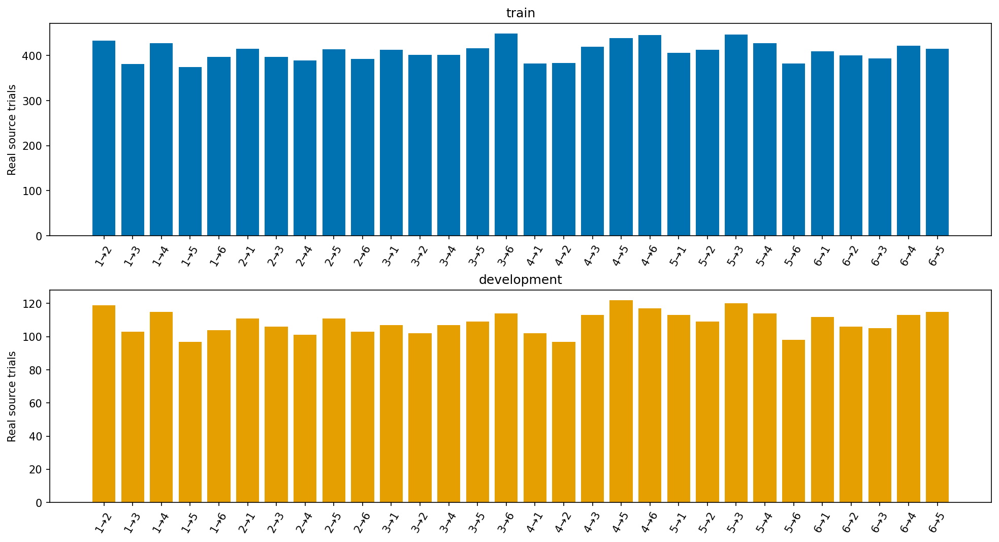
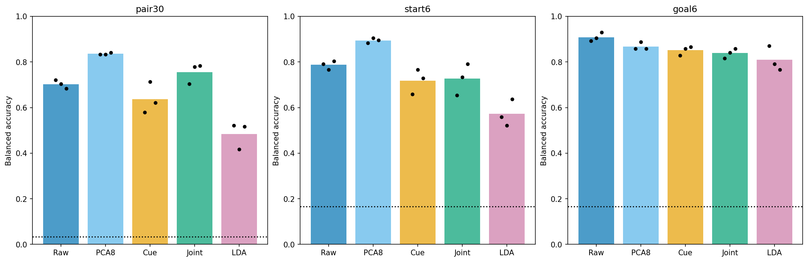
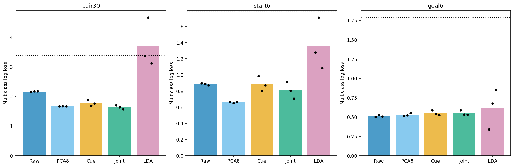
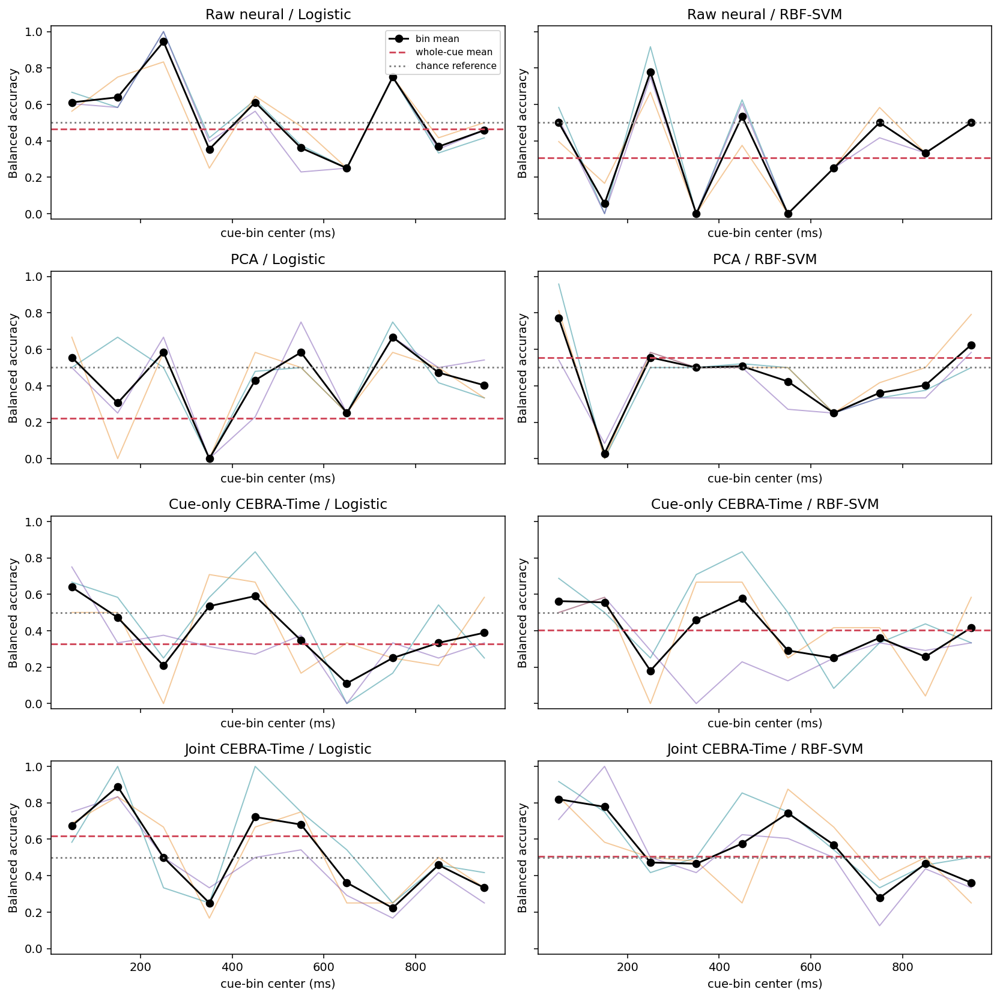
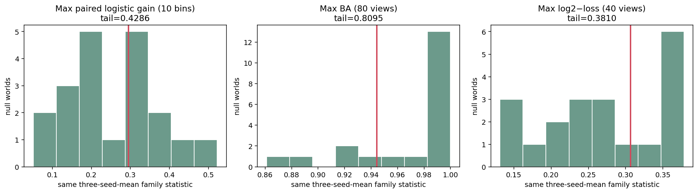

Research manuscript · working draft 02 · 12 October 2026
Decoding navigation-related information from hippocampal activity with CEBRA
Endpoint recovery, path-component decoding, and comparison with simpler representations
Abbreviated manuscript draft. Methods, literature references and supplementary panels remain to be expanded. Results are drawn from completed exploratory studies.
Abstract
Low-dimensional representations of neural activity may make behaviorally relevant information accessible to simple readouts. We evaluated CEBRA representations of hippocampal cue-period activity in a series of exploratory navigation analyses, comparing them with raw spike-count features and principal component analysis (PCA). Label-conditioned pseudopopulations supported decoding of start, goal and ordered start–goal conditions. In the latest matched endpoint comparison, whole-cue pair balanced accuracy was 83.61% for PCA, 75.56% for jointly trained cue/navigation CEBRA, 70.28% for raw features and 63.75% for cue-only CEBRA. The ranking differed for probability loss. Separate path-component studies showed descriptive gains from broader encoder training and individual cue windows, but source-transfer and shuffled-label controls did not establish robust path information beyond endpoints. These findings support conditional task-information recovery in the constructed populations, rather than general CEBRA superiority or recovery of trial-specific hippocampal states.
Keywords: hippocampus; navigation; CEBRA; neural representation; pseudopopulation; decoding
1. Introduction
Predicting where a navigation trial begins and ends is a different problem from predicting the movement between those locations. Multiple paths may connect the same start and goal. Evidence that neural activity distinguishes endpoint conditions therefore does not, by itself, establish that it contains information about the subsequent path beyond those endpoints.
The original question motivating these analyses was whether hippocampal activity during the cue period, before navigation, contains such additional path information and whether that information has a reproducible low-dimensional organization. CEBRA was investigated as a method for learning compact neural representations. Its utility was assessed through downstream prediction and comparisons with simpler representations, rather than the appearance of an embedding alone.
Here, we bring together the completed endpoint and path-component analyses. We distinguish information recovery within constructed task conditions from generalization to different source trials, and examine how encoder training, readout choice and temporal resolution affect the observed results. The studies differ in their targets and source populations; they are treated as related experiments, not pooled into a single performance ranking.
[Task schematic and verified example paths to be inserted. Navigation-task and CEBRA literature citations remain to be integrated.]
2. Materials and methods
2.1. Recordings, task labels and study populations
The analyses used hippocampal units selected for place responsiveness. Spike timestamps were converted to counts in short cue-period windows. Endpoint targets comprised six start categories, six goal categories and 30 ordered start–goal pairs. The endpoint IDs are marker-derived categories whose exact task semantics still require laboratory confirmation.
Three principal study populations were used (Table 1). The fixed-endpoint path assay predicted the presence of one directed component among interior corridor runs for start–goal pair 4→3, excluding the first and last runs. It did not predict the complete ordered route. A separate preprocessing/PCA study examined supported component targets across five endpoint groups.
| Study | Units / sessions | Training / development real sources | Prediction target |
|---|---|---|---|
| Endpoint comparison | 195 / 58 | 12,288 / 3,265 | Start, goal and ordered pair |
| Fixed-endpoint path assay | 29 / 7 | 82 / 22 | Interior directed component within 4→3 |
| Preprocessing / matched PCA | 49 / 13 | 147 / 41 | Component assays across five endpoint groups |
Counts refer to real source records, not synthetic examples. Development sources had been inspected during earlier exploratory work; they do not constitute fresh confirmatory samples. The populations are overlapping study constructions, not three independent biological replications.
2.2. Pseudopopulation construction and source separation
Real source trials were separated before learned preprocessing and pseudopopulation assembly. Within each split, session blocks were combined conditional on known task labels, retaining the cells and time bins belonging to each selected source block. This construction combines observations across sessions; it does not recover unmeasured cross-session covariance or establish simultaneous population activity on a natural trial.
The latest endpoint comparison assembled 480 training and 240 development examples per computational seed. The later fixed-endpoint path studies used 128 training examples and 30 development combinations, comprising 24 component-absent and six component-present combinations with equal total evaluation weight per class. Constructed rows share real sources and are consequently not independent biological observations. Because assembly uses known labels, endpoint performance is a conditional information assay rather than a deployable predictor for an unknown-label trial.

2.3. Representations and readouts
Raw spike-count features were compared with PCA and CEBRA representations. CEBRA-Time uses temporally related examples in contrastive learning; behavior-guided CEBRA variants use auxiliary labels to determine sampling relationships. These training objectives are distinct from the downstream classifier. In the latest endpoint study, a shared encoder was trained either on cue activity alone or on a 50/50 mixture of cue and navigation activity from training sources. Both conditions were evaluated using cue activity only.
The endpoint comparison used ten 100-ms cue bins. PCA and CEBRA produced eight coordinates per bin; concatenating the first second yielded 80 features, compared with 1,950 raw features. Whole-cue concatenation was not temporal averaging or an eight-dimensional whole-trial state. Scaling, dimensionality reduction and readouts used training data only. Raw/PCA/CEBRA features were evaluated with logistic regression (C = 0.01); raw-feature linear discriminant analysis (LDA) provided a separate supervised reference. The path studies additionally examined nearest-neighbor and nonlinear radial-basis-function support-vector-machine readouts.
2.4. Evaluation and statistical interpretation
Balanced accuracy (BA) averages recall across classes; logarithmic loss evaluates predicted probabilities and penalizes confident errors. Chance-reference BA is 1/30 for the ordered pair, 1/6 for start or goal, and 1/2 for the binary path component. Three computational seeds describe variation in construction and fitting, not biological replication or confidence intervals.
Source-coherent label shuffles and source-sensitivity analyses were used where specified by each study. The October comparisons retained 20 shuffled worlds, with seed averaging performed before taking maxima across predefined comparison families. Inclusive plus-one tail fractions therefore have a minimum resolution of 1/21. These are no-association diagnostics, not universal method-superiority tests, and do not remove historical evaluation exposure or unresolved nuisance confounds. Full configurations and source ledgers remain in the linked supporting reports.
3. Results
3.1. Endpoint conditions were recoverable, with target- and metric-dependent method rankings
In the latest matched comparison, cue-period features distinguished endpoint conditions in the constructed development population (Figure 2). PCA achieved the highest whole-cue pair and start BA among the tested methods, whereas raw features achieved the highest goal BA. Joint cue/navigation CEBRA increased pair BA from 63.75% to 75.56% relative to cue-only CEBRA, but the corresponding changes for start and goal were +0.83 and −1.25 percentage points. The gain was therefore not uniform across targets.

Accuracy and probability quality did not produce the same ordering (Figure 3). Joint CEBRA had lower mean pair log loss than PCA (1.6373 versus 1.6736), despite lower pair BA (75.56% versus 83.61%). The whole-cue joint-gain null-family tail was 8/21. These results describe a conditional improvement over cue-only CEBRA, not robust general superiority over the comparison methods.

3.2. Path-component decoding was sensitive to source population and cue window
Strong endpoint decoding did not translate into robust path-component evidence. Earlier fixed-endpoint studies found that CEBRA readouts transferred well across new mixtures of training sources but poorly to a different source pool. In the separate five-endpoint preprocessing/PCA study, stronger regularization improved probability loss, but improvements were not broadly supported across endpoint groups; matched raw and PCA readouts both achieved 55% BA.
The later fixed 4→3 cue-time assay revealed pronounced window dependence (Figure 4). Joint CEBRA with a logistic readout reached a descriptive mean BA of 88.89% at 100–200 ms, compared with 61.81% for its separately trained whole-cue readout. Raw-feature logistic regression reached 94.44% at 200–300 ms. These maxima were identified by inspecting all ten windows and are not validated optimal prediction times.

The shuffled-label controls substantially limited interpretation of these peaks (Figure 5). Sixteen of 20 shuffled worlds had a maximum across the 80 bin/representation/readout views at least as large as the observed maximum, giving an inclusive tail fraction of 17/21. The predeclared maximum joint-training logistic gain had a tail fraction of 9/21. Thus, the observed peaks did not establish robust path information or a reliable advantage of joint training within this assay.

3.3. Sampling and readout ablations constrained explanations for performance differences
Historical endpoint experiments showed that contrastive sampling, training duration and source coverage could materially change performance. In contrast, nonlinear readouts and broader regularization/kernel searches did not rescue the tested frozen CEBRA path representations. These findings weaken a simple readout-under-capacity explanation for that path benchmark, but do not establish the cause of its source-transfer failure. The path decoder experiments also do not substitute for a matched nonlinear readout comparison on the latest endpoint representations.
[Abbreviated results subsection. Sampler contrasts and decoder/regularization panels will be integrated from the completed studies listed in Supporting information.]
3.4. Low-dimensional displays did not determine predictive utility
The existing latent atlas showed that three-dimensional views can omit substantial structure from an eight-coordinate representation. For one historical endpoint CEBRA-Behavior model, the training-fitted three-dimensional bin display retained only 56.3–64.2% of development energy across seeds. Conversely, structured-looking path embeddings coexisted with weak source transfer. These diagnostics characterize the learned representations and their projections; they do not establish a biological manifold dimension or a shared cue/navigation geometry.
[Latent-view and projection-fidelity panels remain to be selected from the existing atlas. Geometry for the latest endpoint cue/joint models has not been analyzed.]
4. Discussion
4.1. Endpoint information is distinct from prospective path information
The clearest positive result is recovery of endpoint-condition information within the constructed development populations. This does not resolve the original path question: the endpoints may be discriminable even when activity does not distinguish alternative movements between them. The path studies tested narrower component-level formulations and did not establish robust additional path information. They neither demonstrate the absence of hippocampal path coding nor constitute a completed test of full ordered-route prediction.
4.2. Interpretation is limited by the evaluation object
Label-conditioned pseudopopulations allow information to be studied across recordings that do not provide a verified simultaneous population. Their interpretation is correspondingly condition-level. Dependence between constructed examples, limited session-by-class support and historical development-set exposure constrain generalization claims. Unresolved task metadata and possible covariation with position, view, heading, action or session further prevent a unique biological interpretation. Computational seeds, model replay and attractive projections cannot supply the missing biological replication.
4.3. Implications for reusable neural representations
CEBRA remains a candidate representation-learning method rather than a required winner over raw features or PCA. A subsequent research direction could ask whether a frozen representation supports new readouts or predicts future observations under explicit measurement constraints. That question differs from recovering current task labels and from formal observability of a specified state model. The present results do not establish such reuse or state recovery. Matched CEBRA temporal and cross-phase transfer remain untested, although historical raw-feature LDA goal temporal generalization is available. A separate agenda is being developed; its data route and protocol are not yet adopted.
5. Conclusion
Across the completed exploratory studies, endpoint-condition decoding was more strongly supported than robust path-component generalization. CEBRA's utility depended on the target, training construction and evaluation metric, with raw and PCA representations remaining important comparators. The results motivate careful separation of task-information recovery, source generalization and representation reuse, without implying that a complete hippocampal state has been identified.
Supporting information
Study-specific configurations, additional figures and verification records are retained in the following reports. The sources are not independent replications; several analyses reuse the same recordings or fitted models.
- Endpoint analyses. Matched cue-time and joint-training study, including source counts, all-seed metrics and count/normalized confusion matrices; historical sampler, readout and coverage comparisons.
- Path measurement and source generalization. Initial component construction and representation studies; source-transfer and per-unit analyses.
- Preprocessing and readout ablations. Five-endpoint preprocessing study; matched PCA/raw comparison; frozen-representation decoder comparison; regularization and kernel diagnosis.
- Encoder training and temporal resolution. Cue-only versus broader encoder training; path cue-time curves, confusions, nulls and checkpoint diagnostics. The latter reuses whole-cue models from the former; it is not a new whole-cue replication.
- Geometry and temporal-generalization context. Historical latent atlas; projection-fidelity results; construction diagrams and historical raw-LDA goal temporal generalization.
[Formal literature bibliography and consolidated supplementary figure numbering remain incomplete.]